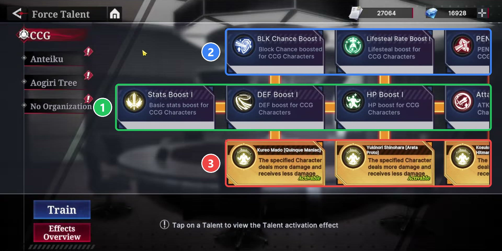
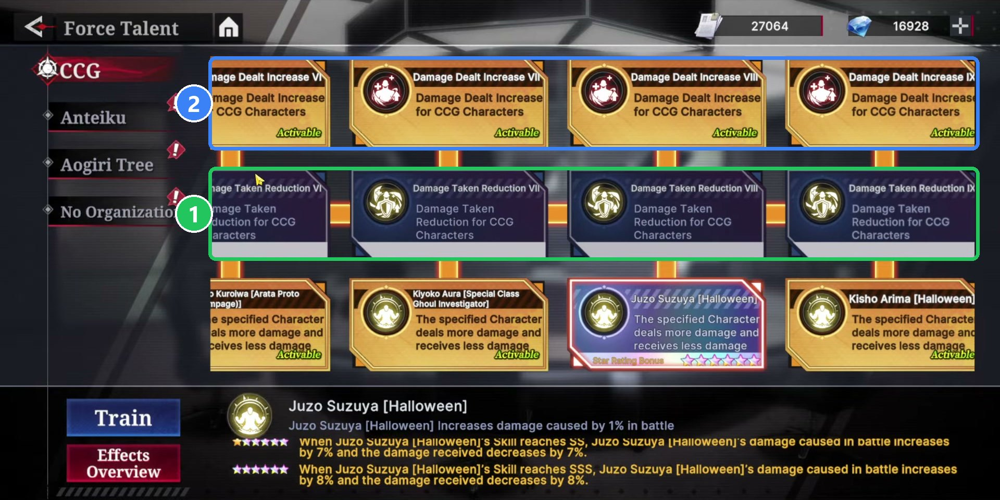
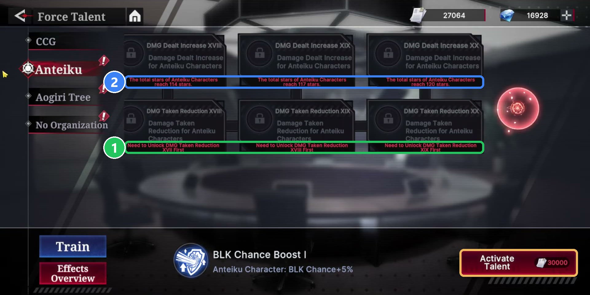
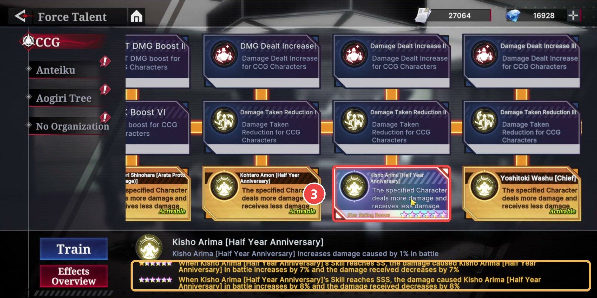

The tree in four pictures
Real in-game screens. Every org has the same three rows; the colours and numbers match the buy order below.

Three rows
Each org's tree has a middle row (flat ATK, DEF, HP), a top row (% stats) and a bottom row of character nodes. You buy nodes with Talent Certificates.

Both rows continue into damage nodes
After ATK Boost VI the middle row becomes Damage Taken Reduction. After CRIT DMG Boost II the top row becomes Damage Dealt Increase. Each node is 0.5%.

What locks a node, and one price
A top-row node needs a total number of stars across that org's characters (here 114, 117, 120). A middle-row node only needs the node before it. Gold box: this node costs 30,000 Talent Certificates.

Character nodes pay off at SS and SSS
A character node gives that one character +1% damage. Gold box: at SS it becomes +7% damage and -7% damage taken, at SSS +8% and -8%.
The order to buy in
Four creators agree on this order. Sources are at the bottom of the page.
- 1
Your main team's org: the middle row
Flat ATK, DEF and HP first, then keep going into Damage Taken Reduction. No star requirement, each node only needs the one before it.
- 2
Same org: the top row
The % stats (Block, Lifesteal, PEN, CRIT and so on), then Damage Dealt Increase. Every node needs more total stars on that org's characters.
- 3
Character nodes, only at SSS
A character node gives +1% damage until the character is SS (+7% / -7%) or SSS (+8% / -8%). Buy them for main-team characters that are already SSS.
- 4
The middle row of every other org
Up to ATK Boost IV. It is cheap and it helps your other teams.
- 5
The org of your off-org units
A unit only gets its own org's talents. Hideyoshi and Roma [Mad Clown] are No Organization; Akira [June Bride] is CCG. If they sit in your main team, raise that org next.
- 6
Your second team, last
No reset is known, so plan before you spend.
What you get
The flat and % numbers are the same in all four orgs.
Org by org
How many stars each org needs, and which partner each team regular's character node asks for. Stars are counted across all of that org's characters.
Anteiku
| Character node | You must also own |
|---|---|
| Toka [School Festival Maid Costume] | Nishiki Nishio [Senior] |
| Yoshimura [Owl of Readiness] | Toka [Blazewing] |
| Toka [June Bride] | Hinami [Fledgling Butterfly] |
| Hinami [Hina Matsuri] | Toka [Blazewing] |
| Ken Kaneki [√A] | Hinami [Fledgling Butterfly] |
| Toka [Flame Strike] | Ken Kaneki [Book-Lover] |
Hinami [Halloween] is newer than our files, so her node is not listed.
Aogiri Tree
| Character node | You must also own |
|---|---|
| Yakumo [Natsu Matsuri] | Noro [Quick Revival] |
| Ayato [Black Rabbit] | Naki [Crybaby] |
| Naki [Prisoner] | Yakumo [Jason] |
| Noro [Overpower] | Yakumo [Jason] |
| Miza Kusakari [Triple Blade] | Gagi [Naki's Sidekick] |
| Eto [3M Downloads] | Noro [Quick Revival] |
Most partners are old launch units. Make sure you own Yakumo [Jason], Naki [Crybaby] and Noro [Quick Revival].
CCG
| Character node | You must also own |
|---|---|
| Juzo [False Girl] | Shinohara [Unyielding Shinohara] |
| Haise [Mentor] | Akira [Rose on the Battlefield] |
| Akira [June Bride] | Kaya [Black Dog] |
| Ginshi Shirazu | Kori Ui [Shining New Star] |
| Urie Kuki | Akira [Rose on the Battlefield] |
| Toru Mutsuki | Take Hirako [Absolute Strength] |
The most expensive top row by far. Akira [June Bride] is the back-up in most teams, so the CCG middle row helps almost everyone.
No Organization
| Character node | You must also own |
|---|---|
| Nutcracker | Kie Muramatsu [Applehead] |
| Uta [The Past] | Ken Kaneki [Book-Lover] |
| Hideyoshi [Best Friend] | Toka [Blazewing] |
| Sen Takatsuki [Elegant Deception] | Hinami [Fledgling Butterfly] |
| Sen Takatsuki [Novelist] | Yoshimura [Non-Killing Owl] |
| Rize [Seaside Carnival Party] | Nashiro [Spotless Shroud] |
| Roma [Mad Clown] | Nishiki Nishio [Senior] |
The cheapest top row. Hideyoshi and Roma [Mad Clown] sit in other orgs' teams, so this tree pays off for almost everyone.
Where this comes from
| Source | What | What it backs up |
|---|---|---|
| Black_Assasine12 | Force Talent guide, Dec 1, 2025 | The full walk-through behind steps 1 to 6, and every screenshot on this page. |
| Shi | Mar 23 and May 21, 2026 | "Middle and top row for every single org"; bottom rows for characters you do not use are "empty CP". |
| Aslan | May 25, 2026 | "I upgraded the middle row till damage reduction" before the other rows. |
| Zeketta | Force Talent section of his guide | Middle row first, then the top row, main org first, character row last. |
| Shi | Apr 27, 2026 | Rough value: 50,000 Talent Certificates is about 2,500 CP, in a straight line. |
| Game data | value table and game text, files of Sept 22, 2026 | The flat-stat and % numbers, the star totals per org, and which partner each character node needs. |
What we do not know yet
- The price of every node. One price is on screen: 30,000 Talent Certificates for BLK Chance Boost I.
- Whether the newer damage nodes (XXI to XL in the newest game files) are also 0.5% each.
- Whether stars on R and SR characters count toward an org's star total. The game says "the total stars of the org's characters".
- Step 5 is spelled out by the creator for Hideyoshi. Roma [Mad Clown] and Akira [June Bride] are our reading of the same rule.